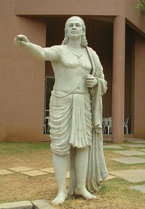
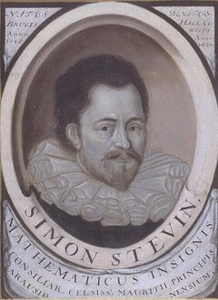

数学・論理
数学的に最適な基数は10ではない。それでも人類はこの数を選んだ——いや、選ばされた。両手の指という、あまりにも素朴な理由で。
シモン・ステヴィンが『De Thiende（十分の一の術）』を出版。10進小数を体系化し、10進法が計算の世界標準として制度化される転換点となった。
同年の世界：英西戦争が勃発。ウォルター・ローリーの植民隊がロアノーク島に上陸——のちに「消えた植民地」として知られることになる。
スーパーで買い物をして、レジで「1,280円です」と言われる。あなたは財布から千円札と小銭を出す。1,280。この数字の並び方に違和感を覚えたことは一度もないだろう。1の位、10の位、100の位、1000の位——全部が10の累乗になっている。
時計を見ると、60分で1時間、60秒で1分。なぜ時間だけ10刻みではないのだろう。通貨も長さも重さも10の倍数で動くのに、時間と角度だけが60に支配されている。たまたまだろうか。それとも、どこかで道が分かれたのだろうか。
10進法は「自然」ではない。人類がたまたま指を10本持っていたという、進化の偶然の産物だ。
この記事では、10進法が数学的に「最適」ではないことを体験し、別の基数で世界がどう変わるかを自分の手で試すことができる。
子どもが最初に数を覚えるとき、何を使うだろうか。指だ。片手で5、両手で10。10まで数えたら、指をすべて折って「ひとまとまり」とし、また1から始める。これが位取り記数法位取り記数法（place-value notation）
数字の位置によって値が変わる表記方法。「3」が十の位にあれば30、百の位にあれば300になる。ローマ数字のIII（3）やXXX（30）のような加算型とは根本的に異なる。の感覚の原点であり、なぜ私たちが10を基数に選んだのかという問いの、最も素朴な答えでもある。
基数は身体のどこを数えるかで変わる。10は「指先」を選んだ結果にすぎない。
だが、10は数学的に見ると、あまり優秀な数ではない。10の約数約数（divisor）
ある数を割り切れる整数のこと。10の約数は1, 2, 5, 10。つまり10を「きれいに」分けられるのは半分か5等分だけ。3等分はできない。は1, 2, 5, 10の4つだけだ。1/3を10進法で書くと0.333…と永遠に続く。ピザを3人で分けるような、ごく日常的な割り算が無限小数になる。
| 文明 | 基数 | 身体の起源 | 痕跡 |
|---|---|---|---|
| エジプト（前3000年〜） | 10 | 両手の指 | ヒエログリフの十進記号 |
| シュメール（前3000年〜） | 60 | 指の関節（12）× 片手（5） | 時間・角度（60秒/60分/360°） |
| マヤ（前1世紀〜） | 20 | 手指＋足指 | マヤ暦・ゼロの発明 |
| 中国（前300年〜） | 10 | 両手の指 | 算木・位取り記数法 |
| インド（5世紀〜） | 10 | 両手の指 | ゼロの記号・現代の数字体系 |
一方、12の約数は1, 2, 3, 4, 6, 12の6つ。半分にも、3等分にも、4等分にも割り切れる。実生活の分配で圧倒的に有利だ。実際、今でも「1ダース＝12個」「1フィート＝12インチ」「時計の文字盤＝12」が残っている。これらは12進法の化石である。
10は3で割り切れない。日常で頻出する「3等分」が無限小数になる。12にはこの弱点がない。
シュメールシュメール（Sumer）
紀元前4000年頃からメソポタミア南部に栄えた人類最古級の文明。楔形文字、車輪、60進法を生んだ。バビロニアはシュメールを継承した国家。人は、指先ではなく指の関節を数えた。親指をポインターにして、人差し指から小指までの関節を順に触る。4本の指×3つの関節で、片手だけで12まで数えられる。もう片方の手で「12のセット」を5つまで記録すると——12×5で60になる。これが60進法の身体的な起源だとする説がある。
60という数は一見すると大きすぎるように思える。だが60は2, 3, 4, 5, 6, 10, 12, 15, 20, 30で割り切れる高度合成数高度合成数（highly composite number）
それ以下のどの自然数よりも約数が多い数。60の約数は12個で、60未満のどの数よりも多い。市場で物を分配するのに極めて便利。だ。市場で穀物を2人にも3人にも5人にも分配できる。4000年前のシュメール人の知恵が、あなたのスマートフォンの時刻表示に、今も生きている。
10進法が「ただの指の数」から「世界標準の記数法」に変わるには、もう一つの発明が必要だった。ゼロだ。ゼロがなければ、10と100と1000を区別する方法がない。「306」と「36」を書き分けられない。ローマ数字にゼロがないのは、位取りという概念がないからだ。CCCVIとXXXVIは別の記号で区別する。位取り記数法は、ゼロなしには成立しない。

アーリヤバタ
Aryabhata, 476–550
インドの天文学者・数学者。499年の著書『アーリヤバティーヤ』で、サンスクリットの子音と母音を使った位取り表記を考案。「空（kha）」という概念でゼロの位置を示した。数十億までの数を短い語句で表現できる仕組みは、のちの数学に決定的な影響を与えた。
アーリヤバタが「位置で値が変わる」原理を体系化し、約1世紀後にブラフマグプタブラフマグプタ（Brahmagupta, 598–668）
インドの数学者・天文学者。ゼロの演算規則を初めて定式化した。「ゼロから数を引くと負の数になる」と書いた最初の人物。がゼロの演算規則——「数からそれ自身を引くとゼロになる」——を初めて書き下した。この2つの発明が組み合わさったとき、0から9までのたった10個の記号で、任意の大きさの数を表現できる体系が完成した。
9世紀、ペルシアの数学者アル＝フワーリズミーアル＝フワーリズミー（al-Khwārizmī, c.780–c.850）
ペルシアの数学者。インドの記数法をアラビア語で解説し、イスラム世界に広めた。「algorithm（アルゴリズム）」は彼のラテン語名Algorithmiに由来。がこの仕組みをアラビア語で解説した。10進法は数学的真理として広まったのではない。交易ルート沿いに、商人の手を通じて広まった。
フィボナッチ
Leonardo Fibonacci, c.1170–c.1250
ピサ出身のイタリア人数学者。北アフリカで育ち、アラビア数字の威力を知った。1202年に出版した『算盤の書（Liber Abaci）』でアラビア数字をヨーロッパに本格的に紹介。ローマ数字のCCCLXVII（367）を「367」と3桁で書ける効率は、商人たちを即座に虜にした。
フィボナッチの『算盤の書』がイタリアに衝撃を与えたのは1202年のことだ。だが、ヨーロッパの市民がアラビア数字を日常的に使い始めるまでには、さらに300年かかった。15世紀のグーテンベルクの活字印刷が、ようやくローマ数字を駆逐した。ドイツのアダム・リースが1522年に出版した算術書が、商人と職人の世代に「インドの数字」を定着させた決定打だったとされる。
"The ingenious method of expressing every possible number using a set of ten symbols, each symbol having a place value and an absolute value, emerged in India."
「あらゆる数を10個の記号で表現するという独創的な方法は、インドで生まれた。その重要性は、もはや当たり前になりすぎて正当に評価されていない。」
— ピエール＝シモン・ラプラス、フランスの数学者（18世紀末）
✗ よくある誤解
10進法は数学的に最も優れた記数法である
✓ 実際は
12進法のほうが約数が多く、日常の分数計算に有利。10進法は身体の構造に由来する歴史的選択であり、数学的最適解ではない
✗ よくある誤解
すべての古代文明が10進法を使っていた
✓ 実際は
シュメール/バビロニアは60進法、マヤは20進法を使った。10進法は多数派だが「唯一」ではない
✗ よくある誤解
時間が60進法なのはただの慣習で、合理的な理由はない
✓ 実際は
60は2,3,4,5,6で割り切れる「高度合成数」。時間・角度を多様に分割する必要がある場面では10より合理的だ
あなたが「きりがいい」と感じる数は、基数によって変わる。下の数直線で、10進法と12進法の「きりのいい数」を見比べてみよう。切り替えると、目盛りの間隔自体が変わり、「きりのいい数」の位置がずれる。
10進法で「100」は10²だからきりがいい。12進法では100は84と書く——何の変哲もない数だ。逆に12進法の「100」は144（=12²）であり、10進法の住人にとってはただの端数に見える。「きりのよさ」は数の性質ではなく、基数が作り出す錯覚だ。

シモン・ステヴィン
Simon Stevin, 1548–1620
フランドルの数学者・技術者。1585年に出版した29ページの小冊子『De Thiende（十分の一の術）』で、10進小数の実用的な計算法を体系化した。「星見、測量士、絨毯の計量人、酒樽の計量人、造幣局長、商人の皆さんに」という献辞は、この発明が学者ではなく実務者のためだったことを物語っている。
ステヴィンの貢献は、10進法を「整数の表記法」から「万能の計算道具」に拡張したことにある。3.14、0.25、1.618——私たちが今日使う小数は、すべてステヴィンの仕事に遡る。彼は10進小数の普及が計測と通貨の単位統一につながると確信していた。実際、その予言は200年後に実現する。
フランス革命だ。1793年、革命政府は「すべてを10進法に」という野心的な計画を立てた。メートル法メートル法（metric system）
1799年にフランスで制定された10進法ベースの度量衡体系。1km=1000m、1kg=1000g。現在、世界のほとんどの国で公式に採用。はその最大の成功だ。だが同時に、革命政府は時間の10進化にも手を出した。1日を10時間、1時間を100分、1分を100秒とする「革命暦」である。結果は惨憺たるものだった。労働者は6日ごとの休日を9日ごとに変えられ、時計職人は新しい文字盤を作らされた。そして——12年後に廃止された。60進法が時間の領域で生き残ったのは、慣習の力だけではない。60のほうが3等分にも4等分にも5等分にもできるからだ。
ここまで読んで、10進法の弱点は理解できただろう。だが「理解する」ことと「感覚として掴む」ことは別だ。次の2つの仕掛けで、10と12の差を自分の目で確かめてほしい。
10進法と12進法で、同じ分数がどう見えるかを比較する。表示を切り替えて、数字と図の両方で確かめてみよう。
10進法で割り切れるのは1/2, 1/4, 1/5, 1/8, 1/10。12進法ではそれに加えて1/3, 1/6, 1/9, 1/12も割り切れる。10マスを3人で分けるだけで、10進法では余りが出る。12マスなら余りなし。
次に、もう少し大きな問いに踏み込む。「もし人間の指が10本でなかったら、数の世界はどう変わっていたか？」という思考実験だ。これは空想ではない。実際にマヤ人は20本（手足の指）で数え、シュメール人は関節で12を数えた。指の本数が変われば、基数が変わる。基数が変われば、通貨も時計も変わる。
あなたの手の指が違う本数だったとしよう。基数を選ぶと、その世界の数の書き方・分数の性質・時計の仕組みが変わる。
基数が変われば「きりのいい数」が変わる。100が「きりがいい」と感じるのは、10²だから——つまり10進法の中でだけ通用する感覚だ。
12進法のほうが数学的に優れているなら、なぜ10進法が勝ったのか。答えは数学の外にある。
10進法の勝利は「数学的優位性」ではなく「伝播の容易さ」による。
10進法が定着した構造
指先で数えるのは、人間が道具なしに行える最も単純なカウント方法だ。関節で12を数えるシュメール式は賢いが、他人に教えるのが難しい。交易相手に「親指で関節を触れ」と説明するより、「指を折れ」と言うほうが早い。単純な方法は遠くまで伝わる。言語が違っても、指は10本だ。
インドで生まれた10進位取り記数法は、9世紀にアル＝フワーリズミーがアラビア語で解説し、シルクロード沿いに拡散した。13世紀にフィボナッチがイタリアに持ち込んだとき、ヨーロッパの商人たちはローマ数字のCCCLXVII（367）を「367」と3桁で書ける効率に飛びついた。商業が標準を決めた。最適だったからではなく、すでに広まっていたからだ。
15世紀のグーテンベルク以降、活字印刷が普及すると、0〜9の10種類の活字で任意の数を組めるという利便性が決定的になった。12進法なら12種類の記号が必要になる——10と11を表す新しい記号を覚えてもらう社会的コストは、わずかな数学的利点を上回った。メートル法が10進法を前提に設計されたことで、制度的なロックインは完成した。
以下の年表で、 は10進法の確立に直接関わる出来事、 は関連する周辺の動きを示す。
前3000年頃
シュメール人の60進法
メソポタミアで60進法が確立。指の関節で12を数え、5セットで60とするカウント法。楔形文字の数字記号が生まれる。時間と角度の60進法はここに起源を持つ。
前3000年頃
エジプトの10進法
ヒエログリフで10, 100, 1000…の記号を使い分ける加算型10進法。位取りではないが、基数10の選択はこの時点で定着していた。
499年
アーリヤバタの位取り記数法
インドの数学者アーリヤバタが、サンスクリットの子音と母音を使った位取り表記を考案。数十億までの数を短い語句で表現できる画期的な仕組みだった。
628年
ブラフマグプタがゼロを定式化
『ブラーマスプタシッダーンタ』でゼロの演算規則を初めて記述。「数からそれ自身を引くとゼロになる」。これにより0〜9の10記号で完全な位取りが可能に。
825年頃
アル＝フワーリズミーのアラビア語解説
ペルシアの数学者がインドの記数法をアラビア語で紹介。「algorithm（アルゴリズム）」の語源。イスラム世界に10進法が浸透する契機。
1202年
フィボナッチ『算盤の書』
北アフリカで学んだイタリア人数学者が、ヨーロッパにアラビア数字を本格的に紹介。ローマ数字からの移行が始まる。商業計算の効率が劇的に向上した。
1585年
ステヴィン『De Thiende』出版
10進小数を体系的に解説した29ページの小冊子。小数点の概念を広め、10進法を「計算の世界標準」として確立する決定打になった。
1799年
メートル法の制定
フランス革命後、10進法を前提とした度量衡システムが法制化。1km=1000m, 1kg=1000g。10進法が制度として不可逆に固定された瞬間。
10進法は、数学的に最適な基数ではない。12のほうが約数が多く、60のほうが分割に柔軟で、2のほうがコンピュータに適している。それでも世界の大半が10で数えるのは、人間の指が10本だったからだ。いや——正確には、「指先で数える」という最も怠惰な方法が、最も広く伝播したからだ。
これは3つの力が重なった結果だ。第一に、身体の制約——指先は誰にでも見える。関節カウントのような知的な方法は、教えるコストが高い。第二に、伝播の力学——一度広まった記号体系は、交易を通じて自己強化する。ローマ数字より効率がいいから乗り換えるが、12進法より効率が悪いからといって戻ることはない。第三に、制度のロックイン——メートル法が10進法を前提に制度化された時点で、基数の変更は事実上不可能になった。
この構造は10進法に限った話ではない。VHSVHS（Video Home System）
1976年にJVCが開発した家庭用ビデオ規格。画質ではソニーのBetamaxに劣るとされたが、録画時間の長さと販売戦略で市場を制し、事実上の標準になった。がBetamaxBetamax（ベータマックス）
1975年にソニーが開発した家庭用ビデオ規格。画質・音質ではVHSより優れていたが、録画時間の短さとライセンス戦略の差でVHSに敗れた。「技術的に優れたものが勝つとは限らない」典型例。に勝ったのは画質ではなく販売戦略だった。経路依存性経路依存性（path dependence）
過去の選択が現在の選択肢を制約すること。最初のたまたまの選択が、時間が経つにつれて変更不可能になっていく現象。10進法も典型的な経路依存だ。と呼ばれるこの構造は、一度定着すると覆すコストが指数関数的に増大する。
"The decimal system is a biological accident, not a mathematical inevitability."
10進法は生物学的な偶然であり、数学的な必然ではない。
— しばしば数学教育者のあいだで引用される定型句
だとしたら、こう問わずにはいられない。私たちが「きりがいい」と感じる数——10, 100, 1000——は、宇宙の真実を反映しているのだろうか。それとも、たまたま霊長類の手が五指だったという、進化の偶然を反映しているだけなのか。
確実に後者だ。しかし、それを知ったところで、明日から12進法で暮らすわけにはいかない。制度はすでに固まっている。Dozenal Society of Americaは1944年から12進法の普及を訴え続けているが、メートル法のロックインを覆すことはできていない。私たちにできるのは、10という数に宇宙的な意味を読み込まないことだ。「10年ひと昔」「トップ10」「10点満点」——これらはすべて、指の本数から来ている。宇宙には10という数に格別の意味はない。
Schoolhouse Rock!「Little Twelvetoes」（1973）
アメリカの教育テレビシリーズで、12本指の宇宙人が12進法を教えるエピソード。10と11を表す数字として「dek」「el」が使われ、のちにDozenal Society（12進法推進団体）がこの呼び名を採用した。
J.R.R. トールキン『指輪物語』の暦法
ホビットの暦は1年を12か月×30日＝360日と定め、残りの5〜6日を「ホビットの祝日」として挿入する。言語学者でもあったトールキンは、12と60の約数の豊かさを意識した世界構築を行っている。
Dozenal Society of America（1944–現在）
12進法の普及を目指す実在の団体。会報『The Duodecimal Bulletin』を発行し続けている。2015年にはUnicodeに12進法用の数字記号（↊=10, ↋=11）が収録された。80年以上の活動だが、メートル法のロックインを覆すには至っていない。
フランス革命暦の10進時計（1793–1805）
1日を10時間、1時間を100分とする急進的な10進化の試み。新しい文字盤の時計が製造されたが、60進法の実用的優位性の前に12年で廃止された。現存する革命暦時計はパリの美術工芸博物館などで見ることができる。
The Universal History of Numbers
数の歴史を世界中の文明から網羅的に追った大著。なぜ10進法が支配的になったかを、身体・言語・交易の3つの軸で解き明かしている。分厚いが、どこから読んでも面白い。
De Thiende (The Art of Tenths)
ステヴィンの原著は29ページしかない。Sartonによる1935年の解説論文「The first explanations of decimal fractions and measures」を経由して読むと、なぜこの薄い冊子が世界を変えたのかがわかる。
Alex's Adventures in Numberland
数の感覚がどう形成されるかを、アマゾンの先住民からウォール街まで取材して書いたルポ。基数の選択がいかに文化依存的かを肌感覚で理解できる一冊。
A History of Mathematics: An Introduction
インド数学の位取り記数法からアラビア経由のヨーロッパ伝播まで、第一級の教科書。フィボナッチの『算盤の書』がなぜヨーロッパを変えたのか、商業計算の具体例付きで理解できる。